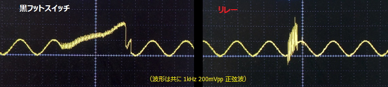

True Bypass Relay Module
2019年07月01日 カテゴリー：自作エフェクター（アナログ）
秋月電子にある特価ラッチリレーEA2-5TNAGを利用したトゥルーバイパスモジュールです。以前解析したmonomonster Relay Bypass Moduleの代わりとして考えました。マイコンを使った方が小型で長押し等に応用が効くという利点があるのですが、プログラミングが必要なのはややハードルが高いかと思います。別な方法を検索してみるとロジックIC（4069）を使ったものを見つけたので、そのまま利用することにしました。
参考ページ→Using a latching relay driver for true bypass
▽回路図
秋月電子では在庫限りの部品が多いのでご注意ください。おそらくC8（10μF）はなしでも大丈夫だと思います。
基板データはGitHubに公開しています。当初ラッチリレーのピン配置の表裏が逆というミスがあったので、公開しているデータはエラー修正済のRev.B基板です。エラー修正前のRev.A基板をお持ちの方は必ずREADME.txtの内容をご確認下さい。HAMMOND1590Bの場合は基板を立てて入れられないので、次に基板発注することがあればもう少し横長に修正するかもしれません。
スイッチングノイズをオシロスコープで確認しました。

一般的な黒い3PDTスイッチと比較すると高い音のノイズですが、音量は同程度のようです。スイッチ交換がしやすい以外の利点がないように思われますが、BOSS筐体に使うような場合には最適ではないかと思います。